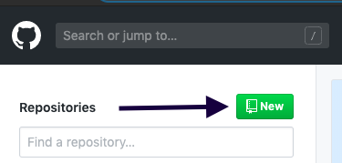
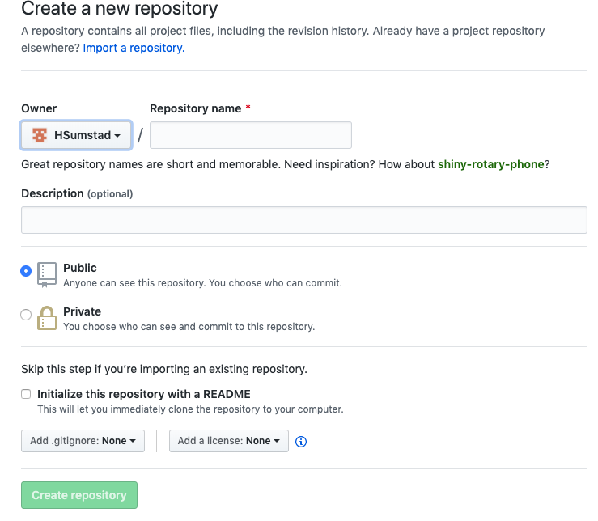
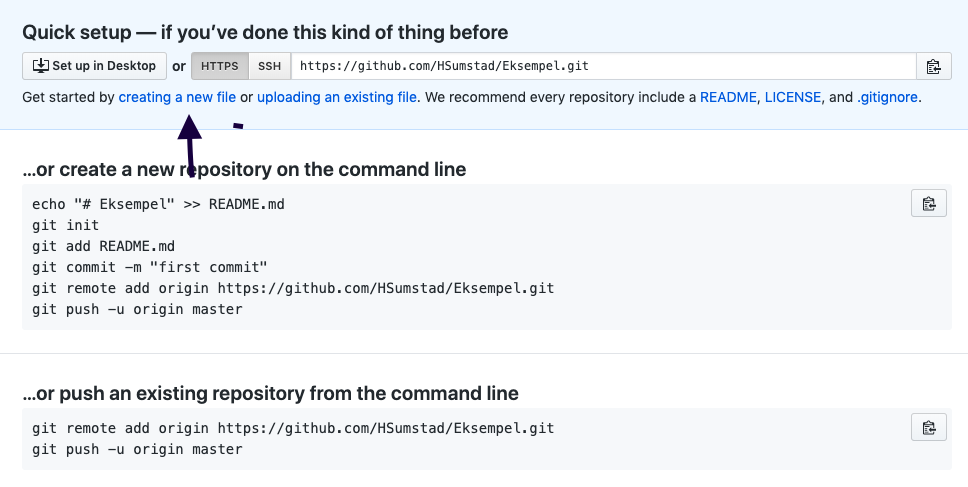
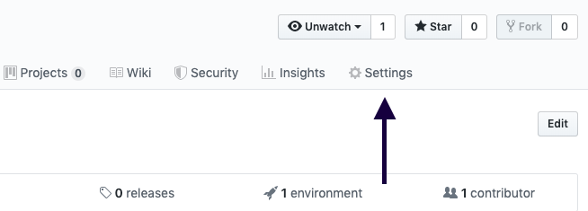
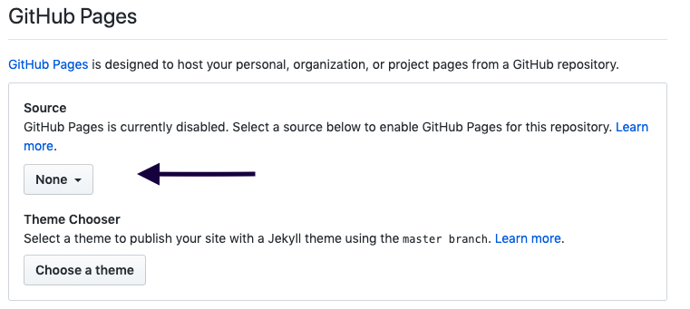

Det første du gjør er å lage en bruker på github.
Du kan bruke denne linken for å komme på nettsiden: github.com Eller du kan søke opp github.com i nettleseren din.
Etter du har fylt inn infoboksene, må du verifisere mailen din.
Det du skal gjøre, er å lage et repository. Her blir alle filene til nettsiden din lagret.
Trykk på "New" oppe i høyre hjørne for å lage et repository.
Etter det er gjort gir du det et navn. Det kan hete hva som helst.
Så velger du om det skal være offentlig eller privat.
Neste du må gjør er å trykke på "creating a new file".
Den kaller du den for "index.md"
Det neste du skal gjøre er å kopiere hele koden din, så skal du lime den inn i filen din, index.md.
Når det er gjort blar du videre ned og trykker på "commit new file".
Trykk inn på repositoryen din og gå på settings.
Deretter skifter du navnet på repositoriet til: (brukernavnet ditt).github.io.
Så blar du ned til Git-Bub pages, trykk på "none" og bytt den med "master branch"
Du har nå publisert websiden din, og du kan åpne den med å trykke på linken under Git-Hub pages.